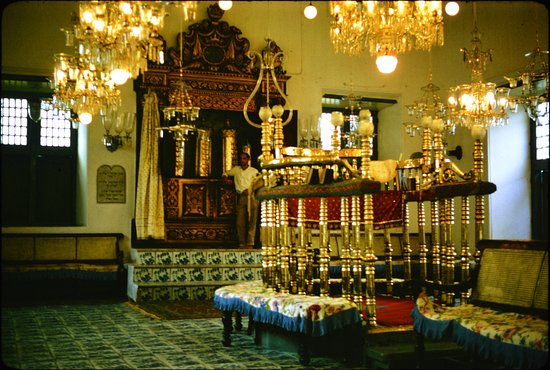
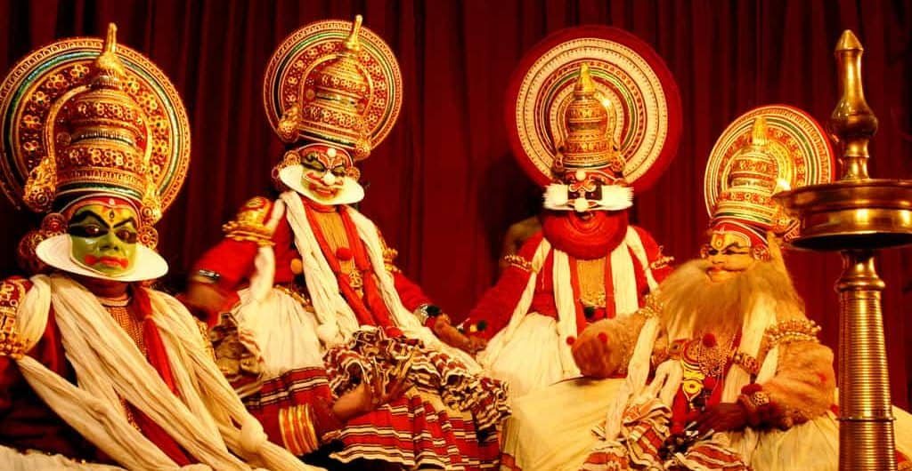

Dutch Palace
The Mattancherry Palace is a Portuguese palace popularly known as the Dutch Palace, in Mattancherry, Kochi, in the Indian state of Kerala which features Kerala murals depicting portraits and exhibits of the Rajas of Kochi.
The palace was included in the "tentative list" of UNESCO World Heritage Site.
1 / 3

2 / 3

Paradesi Synagogue
The Paradesi Synagogue aka Cochin Jewish Synagogue or the Mattancherry Synagogue is a synagogue located in Mattancherry Jew Town, a suburb of the city of Kochi, Kerala, in India. It was built in 1568 A.D. by Samuel Castiel, David Belila, and Joseph Levi for the flourishing Paradesi Jewish community in Kochi.
The Paradesi Synagogue aka Cochin Jewish Synagogue or the Mattancherry Synagogue is a synagogue located in Mattancherry Jew Town, a suburb of the city of Kochi, Kerala, in India. It was built in 1568 A.D. by Samuel Castiel, David Belila, and Joseph Levi for the flourishing Paradesi Jewish community in Kochi.
3 / 3

Kerala Kathakali Centre
Established in the year 1990, the Kerala Kathakali Centre is a prominent institution in Kochi that conducts Kathakali classes. Nearly 300 years old, Kathakali is a classical dance form originating in Kerala which combines certain aspects of ballet, masque, pantomime and opera.
Established in the year 1990, the Kerala Kathakali Centre is a prominent institution in Kochi that conducts Kathakali classes. Nearly 300 years old, Kathakali is a classical dance form originating in Kerala which combines certain aspects of ballet, masque, pantomime and opera.